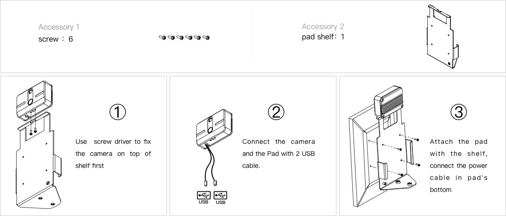
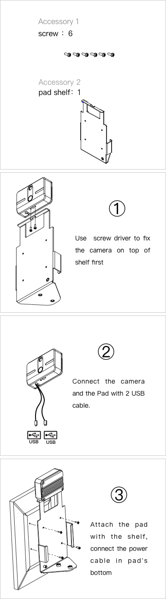
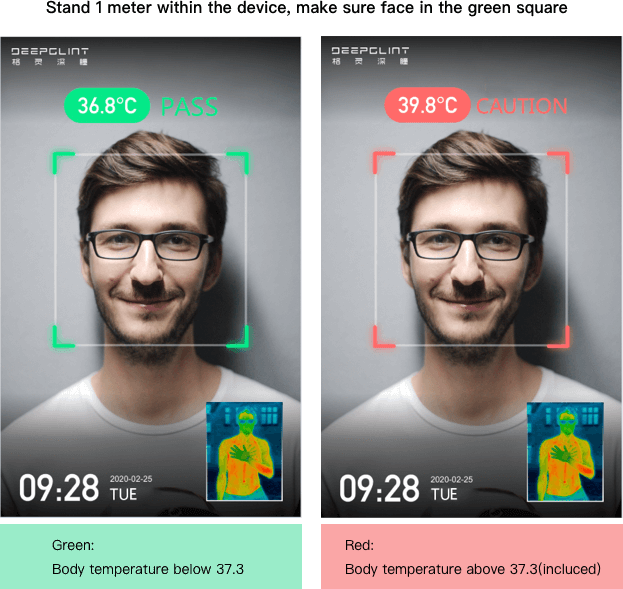
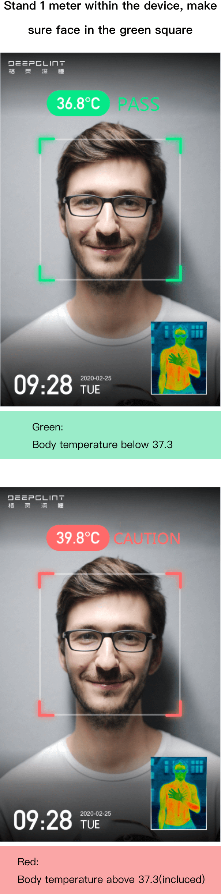

Quick start




Notice:
- One person can be measured at a time, max 30 persons per minute.
- Set the pad at height about 1-1.5 meters, adjust the angle if needed.
- Used indoor only, avoid humidity.
- Long press the power button at the side to power on the device.
- Check the thermal image at the right bottom corner in the screen before use, ensure no high temperature
object appear in it.
- Stand 1 meter within the pad, make sure face in the green square to initialize the measurment.